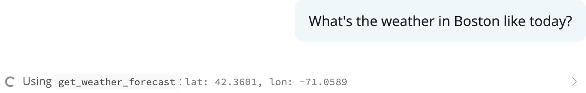
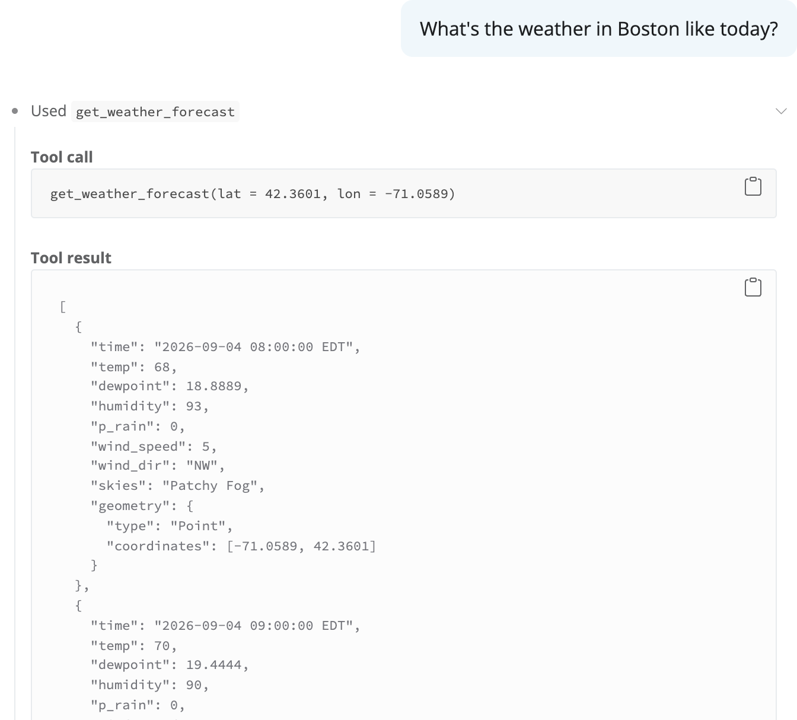
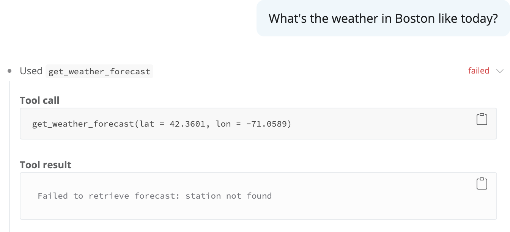
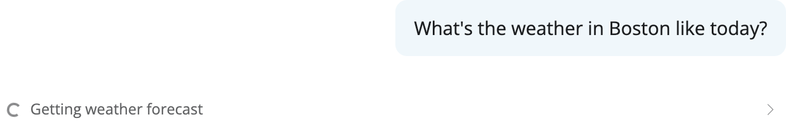
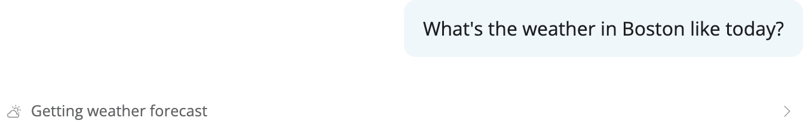
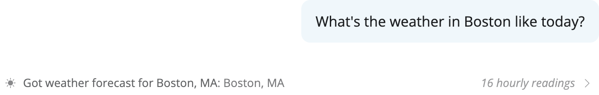
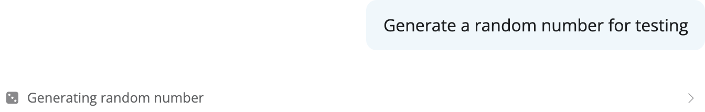
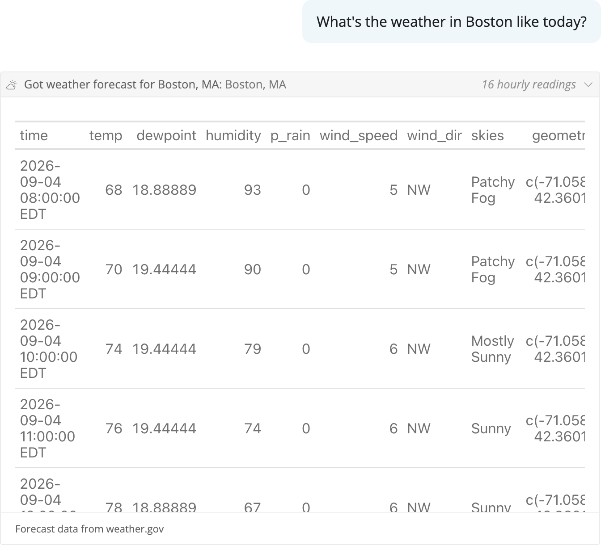
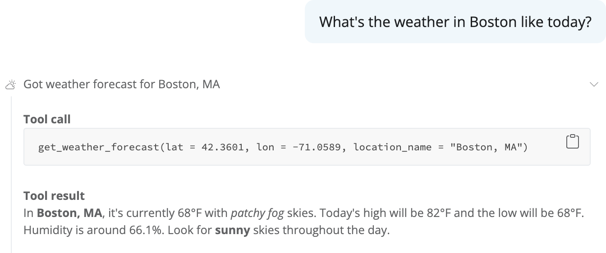

Introduction
shinychat automatically displays rich UI for tool calls and results, providing users with an intuitive view of what tools are being executed and their outcomes. This tool UI works out-of-the-box with ellmer and requires no additional configuration to get started.
By default, tool calls render as a quiet, collapsed activity row that summarizes what’s happening without crowding the conversation. Users can expand that row to see each individual call, and drill into any call to see the full request and result. The rest of this article walks through the default collapsed/expanded behavior and the ways you can customize it—titles and icons, per-call labels and previews, how calls are grouped, and the content shown inside an expanded result.
Basic tool display
Let’s start with a simple weather forecasting tool to demonstrate the default behavior:
library(shinychat)
library(ellmer)
library(weathR) # for forecasts via `point_tomorrow()`
get_weather_forecast <- tool(
function(lat, lon) {
point_tomorrow(lat, lon, short = FALSE)
},
name = "get_weather_forecast",
description = "Get the weather forecast for a location.",
arguments = list(
lat = type_number("Latitude"),
lon = type_number("Longitude")
)
)With ellmer, you register this tool with a chat object. When the LLM calls the tool, ellmer automatically evaluates the tool call and returns the result to the LLM.
chat <- ellmer::chat("openai/gpt-4.1-nano", echo = "output")
chat$register_tool(get_weather_forecast)
chat$chat("What's the weather in Boston like today?")◯ [tool call] get_weather_forecast(lat = 42.3601, lon = -71.0589)
● #> [{"time":"2025-08-05 11:00:00 EDT","temp":76,"dewpoint":17.7778,"hum…
The weather in Boston today is partly sunny with temperatures around 75-76°F
during the afternoon. There is some humidity at about 64-66%. There is a
possibility of rain starting around 4 PM, with increasing chances in the
evening. Winds are coming from the northeast at about 8-10 mph.If you’re interested in learning more about how to use and create tools with ellmer, we recommend reading the Tool/function calling article on the ellmer website.
If you’re working interactively in the R console—and if you’ve set
the echo = "output" option—ellmer shows you when tool calls
are made and gives a preview of the tool result.
◯ [tool call] get_weather_forecast(lat = 42.3601, lon = -71.0589)
● #> [{"time":"2025-08-05 11:00:00 EDT","temp":76,"dewpoint":17.7778,"hum…shinychat’s tool UI works in the same way, but with rich output
displays that are shown directly in the chat_ui() interface
in Shiny apps. When the LLM calls a tool, shinychat adds a compact
activity row to the conversation. Depending on
tool_grouping, one row can summarize several calls; expand
the row to inspect its calls, then drill into a call to see its full
request and result.

While the tool runs, a compact activity row summarizes the call without crowding the conversation.
When the tool result completes, the activity row becomes settled. Drilling into that call opens a card containing the request and result:

When the result lands, the activity row settles. Expanding it opens a drill-down card containing the full request and result.
If the tool throws an error when called, ellmer captures the error and shows it to the LLM. shinychat marks the settled activity row as failed and shows the error in its drill-down card:

A failed tool call marks the activity row as an error, and the drill-down card shows the error message.
When you use chat_app() or chat_server(),
shinychat automatically handles tool requests and results, displaying
them in the chat interface.
On the other hand, if you’re using chat_ui() and calling
chat_append() to stream the chat output, you’ll need to
make sure that ellmer streams tool requests and results to shinychat by
setting stream = "content" in the
$stream_async() call.
server <- function(input, output, session) {
client <- ellmer::chat("openai/gpt-4.1-nano")
client$register_tool(get_weather_forecast)
observeEvent(input$chat_user_input, {
stream <- client$stream_async(input$chat_user_input, stream = "content")
chat_append("chat", stream)
})
}Setting stream = "content" tells ellmer to stream
ellmer::Content objects rather than plain text. As a
result, ellmer::ContentToolRequest and
ellmer::ContentToolResult objects are streamed to
shinychat, which automatically displays the tool requests and results in
the chat interface.
Tool title and icon
Via tool annotations
You can improve the visual presentation by adding
annotations to your ellmer::tool() definition
using ellmer::tool_annotations(). If the tool annotations
include a title or icon, shinychat uses them
in the activity row and its drill-down card.
get_weather_forecast <- tool(
function(lat, lon) {
point_tomorrow(lat, lon, short = FALSE)
},
name = "get_weather_forecast",
description = "Get the weather forecast for a location.",
arguments = list(
lat = type_number("Latitude"),
lon = type_number("Longitude")
),
annotations = tool_annotations(
title = "Getting weather forecast",
icon = bsicons::bs_icon("cloud-sun")
)
)Now the running activity row shows the custom title:

The running activity row uses the annotation’s custom title and icon.
The settled call keeps that title unless its result supplies a replacement, and it uses the same icon:

The settled call keeps the custom title and icon from the tool’s annotations.
Present tense while running, past tense once done
A tool call’s title can come from two independent places:
- The tool’s definition title—set via
tool_annotations(title = )—is shown while the call is running and labels a group of calls to that tool. Write it in the present tense, e.g."Running R code". - The result title—set via
tool_result_display(title = )(see Customizing tool result display)—is shown for a settled single-call row and its drill-down card. In a multi-call group, a distinct result title helps identify that call in the expanded call list. Write it in the past tense, e.g."Ran R code".
For a single-call row, shinychat swaps from the definition title to the result title when the result lands. A multi-call group keeps the shared definition title in its group row; result titles remain specific to their calls. shinychat never rewrites or conjugates either string for you. If you don’t supply a result title, the definition title stays put after the call settles.
Older versions of shinychat wrapped the definition title in a
client-side template—"Running {title}" while in progress,
"{title} failed" on error. That template has been removed.
If your tool’s title reads a little oddly while running (for example, it
was written to read well only after the automatic “Running” prefix was
added), add an explicit present-tense definition title and, where
useful, a past-tense result title. Failures are not folded into the
title string; they’re shown as a separate status cue next to the
title.
Via the tool result
Using tool annotations is an easy way to set the title and icon for
all tool requests and results, but sometimes you’ll want to customize
the display for specific tool calls or results. In these cases, you’ll
need to update your tool function to return an
ellmer::ContentToolResult object, which takes an
extra property that includes a list of extra data to attach
to the result.
shinychat looks for and uses a display object within
extra to customize how the tool result is shown. The
recommended way to build this object is with
tool_result_display(), which validates its arguments and
documents every supported field; a bare named list with the same fields
still works and is promoted internally, but
tool_result_display() is preferred going forward. If the
display’s title and icon are set, these values
override the values in the tool’s annotations.
One useful strategy is to include display parameters in the tool’s
function signature, allowing the LLM to include context or additional
information in the tool call. In the example below, we’ll let the LLM
write the tool result title and we’ll pick an icon based on the
forecasted temperatures. Note that we need to also update the tool’s
arguments to include the new location_name
parameter so that the LLM can provide a meaningful title.
get_weather_forecast <- tool(
function(lat, lon, location_name) {
forecast <- point_tomorrow(lat, lon, short = FALSE)
icon <- if (any(forecast$temp > 70)) {
bsicons::bs_icon("sun-fill")
} else if (any(forecast$temp < 45)) {
bsicons::bs_icon("snow")
} else {
bsicons::bs_icon("cloud-sun-fill")
}
ContentToolResult(
forecast,
extra = list(
display = tool_result_display(
title = paste("Got weather forecast for", location_name),
icon = icon,
label = location_name,
value_preview = paste(nrow(forecast), "hourly readings")
)
)
)
},
name = "get_weather_forecast",
description = "Get the weather forecast for a location.",
arguments = list(
lat = type_number("Latitude"),
lon = type_number("Longitude"),
location_name = type_string("Name of the location for display to the user")
),
annotations = tool_annotations(
title = "Getting weather forecast",
icon = bsicons::bs_icon("cloud-sun")
)
)This complete example gives the running call a present-tense title,
then gives the settled call a past-tense title and icon based on the
forecast. Its label identifies the location in a group of
calls, and its value_preview reports the result size
without opening the drill-down card:

The settled call with a past-tense result title, an icon chosen from the forecast, and a per-call label and value preview.
Tool intent
In the last example, we saw that we could include arguments in the tool function to let the LLM write some of the display text for us (e.g., the location name).
This strategy is so useful that shinychat automatically supports it
for an `_intent` argument. When `_intent` is
present in the tool’s arguments, shinychat shows this value in the tool
request and result titles as the reason the tool was
called.
To demonstrate, we’ll use take a break from our weather tool and
create a tool that simply generates a random number. On its own, the
tool doesn’t need any arguments, but we include a `_intent`
argument in the tool function and we include a description to explain
its purpose.
tool_random_number <- tool(
function(`_intent`) {
runif(1)
},
name = "tool_random_number",
description = "Generate a random number.",
arguments = list(
`_intent` = type_string(
"A short snippet used for display purposes to explain the call to the user."
)
),
annotations = tool_annotations(
title = "Generating random number",
icon = bsicons::bs_icon("dice-3-fill")
)
)When the tool is called, shinychat shows the reason the LLM called the tool in the activity row and drill-down card.

The activity row shows the _intent value supplied by the
LLM as the reason the tool was called.
Customizing tool result display
We’ve already seen that we can customize the tool title and icon by
returning a ContentToolResult object from our tool function
and specifying title and icon in
extra$display, built with
tool_result_display().
shinychat uses the display object for three additional
categories of customization:
- A short per-call
labelandvalue_preview, shown in the activity row. - Alternative
html,markdown, ortextto show the user in place of the text value shown to the LLM. - Options to control how the tool result is presented.
Activity-row label and value preview
While an activity row is collapsed, shinychat shows a per-call
label—a short identifying value like a filename or query,
used to tell this call apart from other calls to the same tool—and a
value_preview, a terse peek at the result, like
"1,204 rows" or "3 files updated". Both are
optional and, like title and icon, are
computed inside the tool function. The complete weather example above
computes label = location_name from the tool input and
value_preview = paste(nrow(forecast), "hourly readings")
from its result.
label and value_preview only affect the
activity row and expanded call list; the full result (or its rich display content) is
still shown in the drill-down card.
When you don’t set a label, shinychat falls back through
the next best identifier it has: the call’s own title when
it differs from the group’s, then a short preview of the call’s
arguments (up to three, as name: value, skipping any whose
name begins with _ or .), and finally the
tool’s name. So a row always says something, even for a tool that takes
no arguments—but a label is what makes two calls to the
same tool easy to tell apart.
Rich content in the drill-down card
By default, shinychat shows the tool result’s value
property as a code block to the user. This is often sufficient, but in
some cases your tool may collect or prepare data that could be better
presented to users in a different format.
For example, our weather tool returns a data frame with the forecast for the next day. The LLM sees a JSON representation of this data frame, but users would likely prefer to see a nicely formatted table.
Set one of the following fields in tool_result_display()
to replace the default result content in the drill-down card:
-
html: An HTML string or object. This can be HTML generated via R packages like htmltools, gt, reactable or even htmlwidgets. -
markdown: A markdown string that is automatically rendered as rich HTML in shinychat. -
text: A plain text string that is shown without code formatting.
Keep in mind that the content you show to your users should
faithfully represent the value shown to the LLM. Our
weather tool is a great example—a JSON object isn’t very user-friendly,
but a table showing the forecast data is perfect. This is still
shinychat’s normal tool UI: the compact activity row remains, and the
rich content appears when the user drills into the settled call.
Alternative HTML display
In the following example, we’ll update the
get_weather_forecast() to show the user a nicely formatted
HTML table using gt.
get_weather_forecast <- tool(
function(lat, lon, location_name) {
forecast_data <- point_tomorrow(lat, lon, short = FALSE)
forecast_table <- gt::as_raw_html(gt::gt(forecast_data))
ContentToolResult(
forecast_data,
extra = list(
display = tool_result_display(
html = forecast_table,
title = paste("Got weather forecast for", location_name),
label = location_name,
value_preview = paste(nrow(forecast_data), "hourly readings"),
show_request = FALSE,
open = TRUE,
full_screen = TRUE,
footer = htmltools::tags$small("Forecast data from weather.gov"),
open_style = "framed"
)
)
)
},
name = "get_weather_forecast",
description = "Get the weather forecast for a location.",
arguments = list(
lat = type_number("Latitude"),
lon = type_number("Longitude"),
location_name = type_string("Name of the location for display to the user")
),
annotations = tool_annotations(
title = "Getting weather forecast",
icon = bsicons::bs_icon("cloud-sun")
)
)This result opens its drill-down card by default. Its rich table,
footer, and fullscreen toggle all live in that card; the compact
activity row remains available as the summary.
open_style = "framed" opts this expanded normal rich result
into Shiny Chat’s frame. Omit it, or use the default
"minimal", to keep the plain drill-down presentation.

A rich tool result: the drill-down card opens by default and shows a formatted table, an attribution footer, and a fullscreen toggle.
Alternative markdown display
You can also prepare markdown content to show your users based on the tool result. It’s less appropriate in our weather tool, but we could use markdown to summarize the forecast in a few sentences.
get_weather_forecast <- tool(
function(lat, lon, location_name) {
forecast_data <- point_tomorrow(lat, lon, short = FALSE)
temp_current <- forecast_data$temp[1]
skies_current <- forecast_data$skies[[1]]
temp_high <- max(forecast_data$temp)
temp_low <- min(forecast_data$temp)
humidity <- round(mean(forecast_data$humidity), 1)
skies <- table(forecast_data$skies)
skies <- names(skies)[which.max(skies)]
forecast_summary <- glue::glue(
"In **{location_name}**, it's currently {temp_current}°F with _{tolower(skies_current)}_ skies. ",
"Today's high will be {temp_high}°F and the low will be {temp_low}°F. ",
"Humidity is around {humidity}%. ",
"Look for **{tolower(skies)}** skies throughout the day."
)
ContentToolResult(
forecast_data,
extra = list(
display = tool_result_display(
markdown = forecast_summary,
title = paste("Got weather forecast for", location_name)
)
)
)
},
name = "get_weather_forecast",
description = "Get the weather forecast for a location.",
arguments = list(
lat = type_number("Latitude"),
lon = type_number("Longitude"),
location_name = type_string("Name of the location for display to the user")
),
annotations = tool_annotations(
title = "Getting weather forecast",
icon = bsicons::bs_icon("cloud-sun")
)
)
The drill-down card renders the markdown display content as
rich HTML in place of the raw result.
Fully custom standalone output
tool_result_display(html = ), markdown =,
and text = customize shinychat’s drill-down card. Use a
custom contents_shinychat() method only when the finished
result should be entirely different UI, such as a
bslib::value_box() or interactive application
component.
Return that UI directly from a method for an
ellmer::ContentToolResult subclass. While the tool is
running, shinychat still shows its activity row. Once the custom result
settles, shinychat removes that call from the row and renders the
returned UI as standalone output below the tool loop. See contents_shinychat()
for the extension pattern.
For most rich results, prefer tool_result_display()
because it preserves the normal activity row and drill-down card. Use
presentation = "framed" there to frame an expanded normal
rich result. A custom method is the deliberate escape hatch for owning
the entire settled result UI; custom standalone output remains separate
and does not receive a framed activity result.
Display Options
In addition to customizing the tool
title and icon and providing alternative display content, you can
also control how the tool result is presented using
tool_result_display() arguments.
These options apply to the drill-down card beneath the activity row:
-
show_request = FALSE: Hide the tool call details from the drill-down card.This is useful when you have rich output and the tool call details are clear from the rest of the display. For example, it might be appropriate to hide the request details when showing a full formatted table of results.
-
open = TRUE: Open the drill-down card by default once the result settles.This is most useful when you’ve customized the drill-down content to include an htmlwidgets or other rich content that users should see immediately.
-
full_screen = TRUE: Add a fullscreen toggle button to the drill-down card.When clicked, the card expands to fill the entire viewport, making it easy to inspect large or detailed content like maps, tables, and plots. Users can exit fullscreen by pressing
Escape, clicking the backdrop, or using the close button. open_style = "framed": Opt an expanded normal rich result into Shiny Chat’s frame. The default"minimal"keeps the plain drill-down presentation.footer: Add HTML content below the drill-down card body. Use it for attribution, a compact summary, or related controls.titleandicon: Choose the title and icon used for the settled call and drill-down card. A resulttitlereplaces the definition-level title in a single-call row; in a multi-call group, it can identify the call in the expanded call list.labelandvalue_preview: Choose the per-call label and result preview shown in the activity row and expanded call list.
Grouping tool calls
When a conversation includes several tool calls, shinychat can
summarize them in one activity row rather than showing one row per call.
Control this with tool_grouping on
chat_ui():
chat_ui("chat", tool_grouping = "tool")tool_grouping accepts one of:
-
"tool"(the default): calls to the same tool within one contiguous tool loop are grouped in one activity row, regardless of the order in which other tools were called. For example, if a loop callsget_weather_forecast, thensearch_web, thenget_weather_forecastagain, the two weather calls are grouped even though a different tool call came between them. -
"all": every tool call in a contiguous tool loop is summarized in one activity row, regardless of tool name. -
"none": each tool call gets its own activity row. A call’s request and result are still available only after drilling into that row; this does not restore the old always-visible card stack.
Prose or thinking between tool calls starts a new tool loop, so calls on opposite sides of either boundary never group together.
Individual tools can override the chat-level setting with a
grouping annotation:
get_weather_forecast <- tool(
function(lat, lon) {
point_tomorrow(lat, lon, short = FALSE)
},
name = "get_weather_forecast",
description = "Get the weather forecast for a location.",
arguments = list(
lat = type_number("Latitude"),
lon = type_number("Longitude")
),
annotations = tool_annotations(
title = "Getting weather forecast",
grouping = "all"
)
)grouping, like title and icon,
is a top-level field on the tool’s annotations—no need to nest it under
anything else. An annotation can override "tool" or
"all" for its tool, including by setting
grouping = "none". But
chat_ui(tool_grouping = "none") takes precedence over every
annotation and disables grouping for the entire chat.
Global display options
shinychat uses the rich tool UI described above by default, but you can choose to hide all tool calls or use shinychat’s basic display without allowing for rich or alternative content displays.
Most users won’t need to customize these options, but it can be useful to use the basic display for debugging or verification purposes when you need to see the tool arguments and outputs exactly as written and seen by the LLM.
To adjust the display for debugging or verification purposes, set the
shinychat.tool_display option (or the
SHINYCHAT_TOOL_DISPLAY environment variable) to one of the
following values:
# Disable tool UI entirely
options(shinychat.tool_display = "none")
# Use basic text-based display (useful for verifying inputs/outputs)
options(shinychat.tool_display = "basic")
# Default rich display applies customizations from tool authors
options(shinychat.tool_display = "rich")For most users, the default "rich" display provides the
best experience.